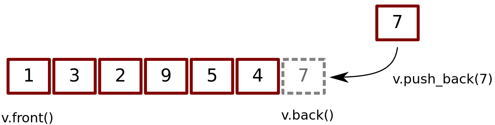

Machine Learning Articles I submitted for my OpenGenus Internship
Biomedical Image Segmentation
Machine Learning | Deep Learning

Image segmentation is the process of partitioning a certain image into several regions of interest (ROI). In the Biomedical field segmented images can be used for anomaly detection, diagnosing diseases, computer-integrated surgery, treatment planning, studying anatomical structures, and much more.
Kohonen Neural Network
Machine Learning
The Kohonen Neural Network (KNN) also known as self organizing maps is a type of unsupervised artificial neural network. This network can be used for clustering analysis and visualization of high-dimension data.
Geomteric Hashing
Algorithms | Hashing
Geometric hashing is a computer vision technique used to detect geometric features in images and matching them to a database with such features. What makes geometric hashing stand out is that it can detect overlapping objects, objects that have gone transformation, or when only partial information is present.
Fibonacci Hashing
Algorithms | Hashing
Fibonacci Hashing another form of multiplicative hashing function that is related to the golden ratio. This can be used as an alternative to other hashing functions; it's faster than sequential and binary searching. We will discuss how it works and implemented.
Extract integers from string and store in vector using C++
C++
how to extract integers from a string and store it in a vector using C++.